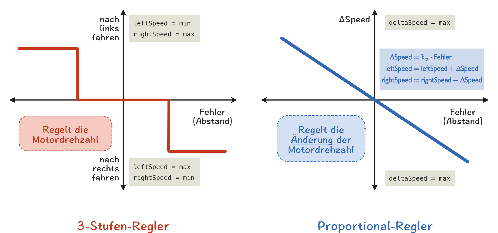

Proportional-Regler für einen Kantenfolger
Der einfache 3-Stufen Algorithmus zum Kantenfolgen funktioniert bei Linien und Abzweigung meistens ganz gut, lässt aber den Roboter die Linie entlangzappeln anstatt ihr geschmeidig zu folgen. Auch wird es mit dem einfache Algorithmus schwierig, dem Roboter bei Kreuzungen oder Abzweigung ein konkretes Verhalten zu programmieren.
Ein wesentlich besserer Ansatz ist der Proportional-Regler (P-Regler), bei dem es nicht nur drei verschiedene Unterscheidungsstufen mit drei verschiedenen Motordrehzahlen gibt, sondern für jeden Unterschied zwischen Sollwert (also)

Bei einem (Proportional-)Regler wird davon ausgegangen, dass ein System eine Sollgröße \( w \) einhalten soll. In unseren Fall ist die Sollgröße der vom Sensor zu erzielende Sensorwert der Linienkante. Weicht der Istwert \( y \), also der aktuell gemessene Sensorwert von der Soll Größe ab,so lässt sich die Regeldifferenz bzw. der Fehlerwert \( e \) leicht als Differenz aus Soll- und Istwert berechnen: \( e = w - y \). Das Ziel eines jeden Reglers ist, es diesen Fehlerwert so klein wie möglich zu halten. Im Fall des Kantenfolgers bedeutet das, dass der Roboter möglichst immer über der Kante bleibt.
Im Gegensatz zum 3-Stufen-Regler, bei dem für drei Bereiche drei feste Werte für die Motordrehzahl (und damit das Kurvenverhalten) festgelegt wurden, wird beim P-Regler die Abweichung der Motordrehzahl deltaSpeed von einer Normgröße speed gesteuert. Die aktuelle Motordrehzahl ergibt sich dann als Summe aus der Normgröße und dieser Abweichung. Wird die Geschwindigkeitsänderung deltaSpeed zur der Drehzahl des linken Rades addiert und von der Drehzahl des rechten Rades abgezogen, fährt der Roboter mit einer positiven Geschwindigkeitsänderung nach rechts und mit einer negativen Differenzgeschwindigkeit nach links:
// PSEUDO-CODE
// speed > 0: Rechtskurve
// speed < 0: Linkskurve
leftSpeed = speed + deltaSpeed // Drehzahl linkes Rad
rightSpeed = speed - deltaSpeed // Drehzahl rechtes Rad
Die Geschwindigkeitsänderung der Motordrehzahl \( \Delta \text{Speed} \) lässt sich mit einem Proportionalitätsfaktor \( k_p \) aus dem Fehlerwert bestimmen: $$ \Delta \text{Speed} = k_p \cdot e $$.
Wahl des Faktors \( k_p \)
Die Wahl des Faktors \( k_p \) hat einen erheblichen Einfluss auf Fahrverhalten des Roboters.
- Ist \(k_p \) zu klein, wird der Fehler nicht schnell genug geändert und der Roboter wird bei einer Kurve ganz schnell die Kante verlieren. Der Fehler steigt also immer weiter an.
- Ist \(k_p \) jedoch zu groß gewählt, so fängt der Roboter an hin- und herzuschwingen. In diesem Fall spricht man auch von einem oszillierenden Verhalten. Diese Oszillationsbewegungen entstehen, weil auf relativ kleine Fehler mit einem zu starken Gegenlenken (also einem zu großen
deltaSpeed) reagiert wird. Man kennt dieses Verhalten von Kindern, die Fahrrad fahren lernen. So lange wie sie noch unsicher sind, wackeln Sie stark mit dem Lenker um das Gleichgewicht zu halten. Erst mit etwas mehr Übung wird ihr Fahrverhalten ruhiger und das Schlingern des Rades nimmt ab. - Ähnlich wie bei dem 3-Stufenregler hat die Geschwindigkeit des Roboters einen großen Einfluss auf das Ergebnis des Reglers. Beginnen Sie am besten mit einer geringen Geschwindigkeit.
Pseudocode P-Regler
Der Algorithmus für den Kantenfolger mit P-Regler könnte wie folgt aussehen:
// PSEUDO-CODE
// Einfacher P-Regler für einen Kantenfolger
wertKante = 600 // Besser automatisch bestimmen.
Kp = 0.3 // Proportionalitätsfaktor des P-Reglers. Ausprobieren, um den richtigen Wert zu finden.
speed = 100 // Richtwert für die Motordrehzahl (Normwert)
wiederhole
sensorWert = leseIRLicht()
e = wertKante - sensorWert // Fehlerwert, Regeldifferenz
deltaSpeed = Kp * e // Geschwindigkeitsänderung
leftSpeed = speed + deltaSpeed // Drehzahl linkes Rad
rightSpeed = speed - deltaSpeed // Drehzahl rechtes Rad
begrenze(leftSpeed) // Werte dürfen nur in einem bestimmten ...
begrenze(rightSpeed) // Wertebereich liegen (z.B. 0 ... 127)
setMotors(leftSpeed,rightSpeed) // Aktualisieren der Motordrehzahlen
Werte begrenzen mit constrain()
In vielen Fällen ist es sinnvoll, die Werte von leftSpeed und rightSpeed zu begrenzen. Hierfür eignet sich die Arduino-Funktion:
wertC = constrain(wert,min,max),
welche den Eingabewert wert auf den angegebenen Minimal- min und Maximalwert max begrenzt. Hierbei gilt:
wertC=wert, wennwertzwischenminundmaxwertC=min, wennwertkleinerministwertC=max, wennwertgrößermaxist
Beispiel
// Begrenzt leftSpeed auf Werte von 0 bis 255
leftSpeed = constrain(leftSpeed, 0, 255);
Aufgaben (Kantenfolger P-Regler)
- Programmieren Sie einen Kantenfolger mit P-Regler. Variieren Sie den Kp-Faktor und analysieren Sie dessen Einfluss auf das Verhalten des Roboters auf gerader Strecke und in Kurvenfahrten. Bei welchem Wert folgt der Roboter ohne zu schwingen einer geraden Linie?
[KantenfolgerPRegler.ino]